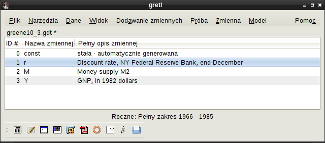
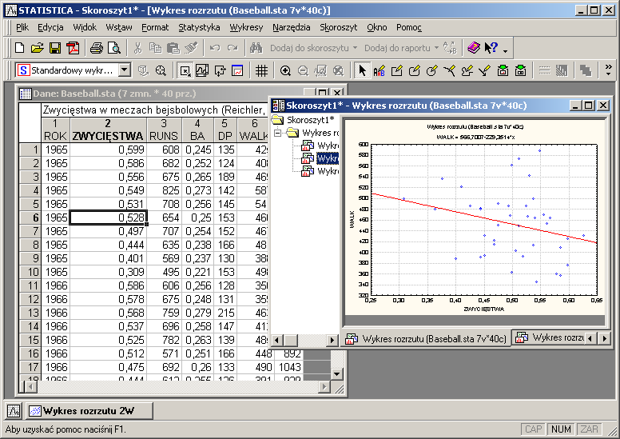
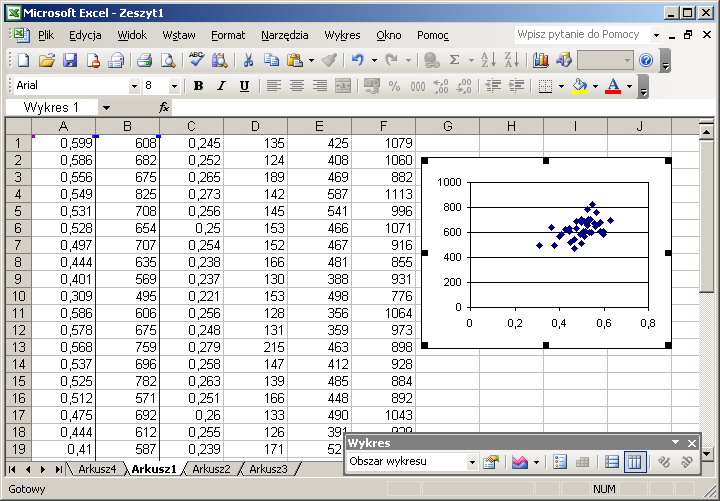

Istnieje wiele programów służących do wykonywania obliczeń statystycznych. Większość z nich jest płatna, czasami można znaleźć mniej lub bardziej profesjonalne darmowe "perełki".
Nazwa programu jest skrótem od GNU Regression, Econometric and Time-series Library [Strona internetowa programu gretl: http://gretl.sourceforge.net z dnia 25 kwietnia 2008]. Został wydany na licencji GNU General Public License w wersji 3, która jest jedną z najmniej restrykcyjnych licencji. Każdy ma dostęp do kodu źródłowego programu, może go modyfikować, ale musi podać skąd pochodzi oryginalny kod. gretl jest dostępny na różne systemy operacyjne: Linux, MS Windows, Mac OS X. Wśród tłumaczeń programu znajduje się również polskie i chociaż nie jest idealne (niekompletne, czasami dwuznaczne), znacznie ułatwia pracę. Nie dotyczy to jednak pomocy, która jest dostępna wyłącznie w języku angielskim.
|  |
Interfejs programu jest rozdzielony na różne okna. W każdym oknie można wykonywać operacje danego rodzaju. Np. w widoku listy zmiennych można dodać, przekształcać zmienne, wybrać liczenie jakiegoś modelu; natomiast w oknie przedstawiającym obliczony model mamy do dyspozycji menu z opcjami takimi jak: rysowanie wykresu czy przeprowadzanie dodatkowych testów statystycznych.
Wadą programu jest możliwość edycji tylko jednego pliku. Co prawda można uruchomić kilka instancji programu, jednakże praca z kilkunastoma otwartymi oknami staje się mało efektywna. Uwagi można mieć również do mało przejrzystego menu.
Pomoc jedynie w angielskim języku może być przeszkodą dla początkujących ekonometryków.
W programie jest dostępny moduł wykresów. Korzysta on z zewnętrznego programu gnuplot. Jeśli nie mamy zainstalowanego gnuplot, nie mamy dostępu do wykresów. Jest to również program o dość ogólnym zastosowaniu, więc narysowanych wykresów nie można modyfikować. Nie jest możliwe nawet ich przeskalowanie, na szczęście istnieje opcja eksportu do pliku graficznego.
Mocną stroną programu jest ilość dostępnych do oszacowania modeli. Poza klasyczną metodą najmniejszych kwadratów są do dyspozycji między innymi:
W większości testów statystycznych przeprowadzanych przez program nie można zmienić poziomu istotności. Moim zdaniem jest to poważna wada.
W programie jest do dyspozycji jedynie niska dokładność obliczeń. Nie można ustalić ilości cyfr znaczących czy poziomu zaokrąglania.
Zaletą programu jest możność eksportu danych w formacie Latex, ale jedynie po instalacji tego środowiska na platformie roboczej.
Statistica jest komercyjnym oprogramowaniem firmy StatSoft [Strona internetowa programu: http://www.statsoft.com z dnia 25 kwietnia 2008. Strona internetowa polskiego oddziału: http://www.statsoft.pl z dnia 25 kwietnia 2008.]. Firma ulepsza pakiet Statistica od 1991 roku, kiedy ukazała się pierwsza wersja. Nie dziwi więc wysoki poziom aplikacji. Program jest całkowicie spolszczony, łącznie ze szczegółową pomocą. Statistica jest drogim programem i nie każdy może sobie na nią pozwolić. Do porównań została użyta polska wersja Statistica 7.1.
Program dostępny jest jedynie na system operacyjny Microsoft Windows, co ogranicza jego wszechstronność. Jednak w zamian otrzymujemy integrację z Microsoftowymi aplikacjami poprzez np. kontrolki ActiveX. Producent deklaruje również możliwość sterowania funkcjami programu z innych aplikacji napisanych w językach Visual Basic, C++, Java. Widoczne jest również podobieństwo interfejsu programu do pakietu biurowego Microsoft Office. W parze z podobieństwem idzie interakcja, tworzone w Statistica np. wykresy można umieszczać w dokumentach programu Word.
|  |
W Statistica do dyspozycji jest cała armia analiz, modeli, wykresów, raportów, zestawień. Na tym obszarze program StatSoftu wygrywa z każdym innym opisanym w pracy.
Moim zdaniem największym minusem programu, poza ceną, jest brak opisanych metod. O ile miary statystyczne takie jak średnia nie potrzebują zbyt rozbudowanego komentarza, to bardziej zaawansowane algorytmy już tak. Co prawda w pomocy można znaleźć wzory funkcji gęstości rozkładów statystycznych, ale próżno szukać wzorów dystrybuant. Tajemnicą zazwyczaj pozostaje sposób liczenia, czasami można się natknąć na rozbieżności między obliczeniami "na kartce", a w tym programie. Zamknięty kod utrudnia napisanie programu "obliczeniowo zgodnego", czyli takiego, który dawałby identyczne wyniki.
Na polskiej stronie StatSoft (http://www.statsoft.pl) można znaleźć informację, że autorzy programu zaimplementowali w obliczeniach obsługę liczb rzeczywistych poczwórnej precyzji. W istocie pozwala to na zwiększenie dokładności obliczeń, ale jedynie dwukrotnie, ponieważ standardowo przez wszystkie programy, nawet Microsoft Excel, obsługiwane są liczby podwójnej precyzji. W programie JStat obliczenia wykonywane z małą dokładnością są właśnie na liczbach podwójnej precyzji. Celem programu jest, jak wielokrotnie wspominano, umożliwienie wykonywania obliczeń dowolnej dokładności. Biorąc pod uwagę np. funkcje programu JStat służące do obliczeń związanych z klasyczną metodą najmniejszych kwadratów już w obecnym stadium rozwoju obliczenia z dowolną zadaną dokładnością są wykonalne.
W program Statistica wbudowany jest, podobnie jak w pakiet Microsoft Office, język makr Visual Basic. Rozbudowany został o funkcje charakterystyczne dla Statistica i nazwany Statistica Visual Basic. Pomimo, że jest to dość prosty język, to nauka kolejnego zajmuje trochę czasu. W programie nauczania Uniwersytetu Ekonomicznego nie ma przedmiotu traktującego o tym języku. Natomiast na wydziale Zarządzania i Finansów są aż dwa przedmioty związane z językiem Java, w którym można pisać skrypty w programie JStat.
Statistica posiada interfejs "wielodokumentowy" (
Program Microsoft Excel [Excel - strona główna, http://office.microsoft.com/pl-pl/excel/default.aspx] wchodzi w skład pakietu Microsoft Office. Jest dostępny tylko na system operacyjny Windows tego samego producenta. Do porównań została użyta polska wersja Excel 2003. Program ten ma licencję własnościową, co oznacza, że korzystanie z niego jest możliwe dopiero po wykupieniu licencji.
|  |
W programie możemy edytować arkusze składające się z komórek. W komórki można wpisywać liczby, tekst lub formuły. Wygodnie można je zaznaczać, przenosić, kopiować czy wypełniać wartościami. Warto wspomnieć, że możliwe jest przenoszenie danych między arkuszami kalkulacyjnymi a programem JStat. Mowa tu również o darmowych odpowiednikach, takich jak np. OpenOffice.org Calc. Dzięki temu można początkowo opracować dane, a następnie przenieść je do JStat i kontynuować obliczenia.
Excel nie jest oprogramowaniem typowo statystycznym. Istnieje rozszerzenie Analysis ToolPak umożliwiające pewne obliczenia statystyczne. Ze względu na obecność tego dodatku oraz na dużą popularność programu Microsoftu zdecydowano się włączyć go również do porównania. Excel jest również jednym z programów używanych na zajęciach ze statystyki i ekonometrii na Uniwersytecie Ekonomicznym.
Po uaktywnieniu dodatku i wybraniu pozycji Analiza danych z menu Narzędzia uzyskuje się dostęp do następujących analiz:
Wbudowane funkcje pozwalają przeprowadzić niemalże każdą analizę statystyczną, jednakże stopień komplikacji i poświęconego czasu na opracowanie arkusza dramatycznie wzrasta przy bardziej zaawansowanych obliczeniach. Dodatkowo trudno jest uwzględnić np. różną liczbę zmiennych. Łatwo wyobrazić sobie arkusz liczący banalną macierz wariancji i kowariancji dla 4 zmiennych. Jeśli zaszłaby potrzeba dodania kolejnej zmiennej, konieczne stanie się przebudowanie znaczącej części arkusza lub stworzenie całkowicie nowego. Z tego względu arkusz kalkulacyjny nadaje się tylko do okazjonalnie przeprowadzanych obliczeń. Do badania różnego rodzaju danych najlepiej użyć programu specjalnie do tego stworzonego.
Visual Basic jest wbudowany w program Microsoft Excel. Podobnie jak w przypadku Statistica rodzi się pytanie o zasadność używania tego języka.
W program Excel wbudowanych jest wiele rodzajów wykresów, jednak nie są one tworzone pod kątem obliczeń statystycznych i najbardziej zaawansowaną opcją jest dodawanie linii trendu do wykresu.
Porównując program JStat z innymi aplikacjami należy mieć na uwadze, iż powstał w przeciągu około jednego roku i był w całości (poza drobnymi wyjątkami) napisany przez jedną osobę. Oczywiste jest to, że nie może być tak rozbudowany jak konkurencyjne aplikacje, jednak zawiera pewne cechy niedostępne lub opracowane lepiej niż w pozostałych pozostałych pakietach.
Format HTML. W programie JStat został położony szczególny nacisk na możliwość eksportu danych do formatu HTML, gdyż pomimo bogatego formatowania może być przeglądany przez praktycznie każdy system, nawet tekstowe przeglądarki internetowe, zachowując wszystkie odnośniki, kolory, formatowanie.
Format XML. W programie JStat format ten znalazł szerokie zastosowanie. Zarówno ustawienia programu, jak i każdy zapisany plik, są zapisywane w formacie XML. Jest to format bazujący na tagach. Ułatwia to przetwarzanie przez zewnętrzne narzędzia oraz integrację z innymi programami. Jest to format tekstowy, więc również możliwa jest edycja zapisanych plików w najprostszym edytorze tekstu. Żaden z porównywanych programów nie oferuje tak prostej edycji swoich plików z danymi. W dobie WebServices oraz SaaS (Software as a service) zastosowanie XML jako formatu wymiany danych jest dobrym krokiem w kierunku przyszłego rozwoju programu.
Modułowa budowa. Moduły są na tyle niezależnymi częściami, że po niewielkich modyfikacjach mogłyby stać się osobnymi aplikacjami. Oczywiście musiałyby zawierać "rdzeń obliczeniowy", odpowiedzialny za wszystkie obliczenia.
Kalkulator. Dziwne, że w żadnym z porównywanych programów nie ma wygodnego narzędzia służącego do obliczania wyrażeń wprowadzanych przez użytkownika. Moduł ten stosując odpowiednie formatowanie (wyrażenia wprowadzone na niebiesko, wyniki w domyślnym kolorze, błędy na czerwono) jest bardzo przydatny, nawet jeśli naszym celem jest jedynie zsumowanie kilku liczb.
Wykres. W obecnej wersji co prawda istnieje na razie jedynie jeden typ wykresu, jednak dodanie nowych rodzajów jest stosunkowo proste. Po wykreśleniu wykresu (można narysować dowolne wyrażenie wprowadzone przez użytkownika) można bardzo łatwo zmieniać skalę, przesuwać obszar kreślenia, używając jedynie kliknięć myszką oraz odpowiednich modyfikatorów na klawiaturze. Nauczenie się obsługi wykresu nie zajmuje dużo czasu, a sposób pracy został pomyślany by był jak najbardziej naturalny.
Skrypty.
Dodanie obsługi skryptów do programu JStat znacząco
rozszerza jego możliwości. Praktycznie są one ograniczone
jedynie wyobraźnią użytkowników. Na tym polu
JStat nie ma się czego wstydzić przed konkurentami.
Natomiast unikalną cechą jest możliwość
pisania własnych rozszerzeń, dostępnych przez
menu Wtyczki. Sposób ich tworzenia został
opisany w rozdziale o wtyczkach.
Instalacja kolejnych wtyczek ogranicza się do zapisania
ich w odpowiednim folderze.
Język Java
jest obecnie jednym z najpopularniejszych (w większości
zestawień zajmuje pierwsze miejsce) języków programowania.
Umożliwienie dodawania skryptów właśnie w tym języku
wydaje się jak najbardziej słuszne, osoby znające podstawy
tego języka mogą bardzo szybko rozpocząć korzystanie ze skryptów.
Dla osób, które chciałyby poznać ten fascynujący
język w osobnym rozdziale przygotowano niezbędny
wstęp do programowania.
Edytor funkcji. Zapamiętanie wszystkich funkcji dostępnych w programie byłoby zadaniem trudnym, dlatego istnieje narzędzie ułatwiające korzystanie z obszernej biblioteki funkcji. Uruchomienie Edytora funkcji ułatwia wpisywanie argumentów, dodatkowo wyświetlana jest pomoc opisująca każdą z dostępnych funkcji. Narzędzie to jest wzorowane na podobnych oknach dostępnych w arkuszach kalkulacyjnych. W JStat zostało ono jednak rozszerzone o opcję wstawienia do aktualnie edytowanej strony nawet całego wyrażenia, nie tylko jego wyniku.
Interfejs. Projektując interfejs do programu kierowano się zasadą nie przeładowywania zbędnymi opcjami, gdyż mogłoby to sprawiać wrażenie ociężałości aplikacji oraz odstraszać nowych użytkowników. Po uruchomieniu widoczne jest jedynie skromne okno z menu i paskiem narzędziowym. Dużą liczbę możliwych do przeprowadzenia operacji udało się "ukryć" w wielu kreatorach. Dzięki kreatorom używanie programu jest prostsze, ponieważ w paru krokach wystarczy podać niezbędne dane wejściowe i nacisnąć OK. Rozbicie operacji na kilka kroków również spowodowało "lżejsze" wrażenie przy użytkowaniu programu. W każdym kroku są również podane pewne wartości domyślne, których użytkownik nie musi zmieniać, jeśli ich nie potrzebuje. Domyślne opcje pozwalają łatwiej wykonywać analizy statystyczne, a zostały wybrane najczęściej powtarzające się (np. domyślnym poziomem istotności jest 5%).
Duża ilość funkcji. Liczba funkcji jest dość duża (ponad 130), a w kolejnych wersjach na pewno lista ta zostanie poszerzona. Dużym plusem programu JStat jest to, że funkcje dostępne są na poziomie wszystkich modułów. Można te same funkcje wykorzystywać zarówno przy obliczeniach w kalkulatorze, rysowaniu wykresu czy tworzeniu własnych skryptów.
Unikalne obliczenia i testy. JStat jako jedyny program w zestawieniu
potrafi policzyć charakterystyki liczbowe dla szeregów rozdzielczych
z przedziałami klasowymi. Wystarczy jedynie wybrać zmienne oznaczające początek
i koniec przedziałów klasowych. Więcej informacji znajduje
się w rozdziale o obliczeniach.
Kolejną niepowtarzalną cechą JStat jest to, że przeprowadzając
analizę dynamiki
potrafi obliczyć przyrosty względne i absolutne (zarówno łańcuchowe jak
i jednopodstawowe). Na ich podstawie obliczane są indywidualne indeksy
dynamiki.
Obliczenia związane z
klasyczną metodą najmniejszych kwadratów również przynoszą szereg
wyjątkowych cech. Poza standardowymi obliczeniami, takimi jak
macierz korelacji, współczynnik korelacji wielorakiej itd.
program potrafi sam zaproponować zmienne, jakie powinny wejść
do końcowego modelu. Dostępne są do tego celu dwa algorytmy.
Pierwszy to dobór zmiennych metodą analizy współczynników korelacji,
a drugi to dobór zmiennych metodą wskaźników pojemności informacji.
W obu przypadkach program przeprowadza sam wszystkie kroki algorytmu
(i liczy np. wskaźnik pojemności informacji dla wszystkich
kombinacji zmiennych). Użytkownik ma wpływ na obliczenia
dostosowując odpowiednio poziom istotności testów.
Jako wynik procedur mających na celu dobór zmiennych
otrzymuje się listę zmiennych. W razie potrzeby, można przeprowadzić
ponowną analizę regresji używając jedynie zaproponowanych zmiennych.
Następną niepowtarzalną cechą jest test istotności wektora
parametrów strukturalnych. Użytkownik podaje pożądany wektor
oraz poziom istotności. JStat przeprowadza test
i podaje wynik.
JStat zawiera podstawową funkcjonalność przydatną początkującym
ekonometrykom. Dzięki przejrzyście napisanemu kodowi programu
oraz dość wyczerpującą dokumentację może być bez przeszkód modyfikowany
przez inne osoby. Kod źródłowy pozostanie otwarty dla wszystkich.
Osoby szukające np. sposobu liczenia dystrybuanty
rozkładu
Dzięki możliwości pisania skryptów oraz wtyczek wraz z udostępnionymi wszystkimi funkcjami statystycznymi przez JStat, możliwe jest zaimplementowanie własnych procedur, a także zautomatyzowanie już istniejących.
W obecnym stadium rozwoju nie można stwierdzić, że JStat jest lepszy od pozostałych wymienionych programów, lecz z całą pewnością można wysnuć przypuszczenie, że może się przydać wielu osobom. Zawiera wiele funkcji niedostępnych u konkurencji. Dodatkową zaletą będzie otwarty kod źródłowy aplikacji.
Planowane jest upublicznienie programu na stronie internetowej podanej w oknie pomocy. Zostanie stworzona platforma, dzięki której możliwa stanie się wymiana napisanych rozszerzeń przez użytkowników. Część z nich, oczywiście za zgodą autorów, będzie sukcesywnie włączana do kolejnych wersji programu. Pozwoli to równocześnie tworzyć wielu osobom prawdziwie "idealny program" statystyczny. Dzięki temu każda kolejna wersja będzie bogatsza oraz coraz lepiej będzie uzupełniać działania początkujących (w przyszłości na pewno nie tylko początkujących) osób zainteresowanych ekonometrią.
Planowane jest upublicznienie programu na stronie internetowej podanej w oknie pomocy. Zostanie stworzona platforma, dzięki której możliwa stanie się wymiana napisanych rozszerzeń przez użytkowników. Część z nich, oczywiście za zgodą autorów, będzie sukcesywnie włączana do kolejnych wersji programu. Dzięki temu każda kolejna wersja byłaby bogatsza oraz coraz lepiej uzupełniała działania początkujących (w przyszłości na pewno nie tylko początkujących) osób zainteresowanych ekonometrią.